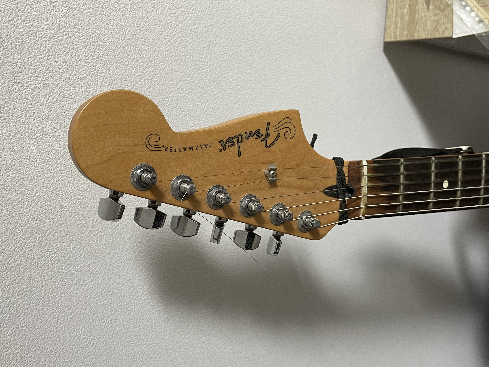

| My Web space | |||
|---|---|---|---|
| HOME PORTFOLIO GAME | |||
Helpful CSS Links |
About MeHello, my name is Kaito Kuroyanagi. I wanted to study network security and programming, so I enrolled in Ritsumeikan University majoring in computer science. Especially, I like learning security, so I entered security network course. My family consists of my parents, my grand parents, a younger sister and an elder brother. In my free time, I like playing the guitar and walking. I can play both acoustic and electric guitars, but these days I mainly play electric guitar. The type of electric guitar I often use is a Fender Jazzmaster. My favorite music genres are jazz, rock, acid jazz, fusion, funk, and kawaii future bass. I want to get a job which I make something in the field of IT or Music in the future. Recently, I started to cook, and I became capable of making a curry and a Japanese hot pot dish. I try to cook a dish which I have never cook in my free time. Fender Jazzmaster |
Contact Me | |
| the date of creation: 7/18 | |||